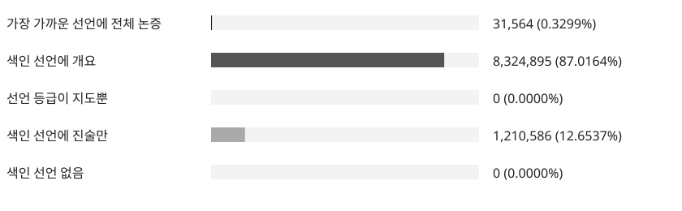

서술 범위와 검증 과제
AI-written, AI cross-reviewed; no human sign-off; not a claim that RH is proved
서술 범위
고정된 allChi 그래프의 문헌 경계까지 도달 가능한 코어. 전체 고정 소스는 17,374,215 물리 줄이다.
기존 색인의 각 잔여 구역을 나누지 않고 가장 가까운 지정 하위 트리로 배정한다. 그 밖에서는 열거한 상위 선언에 직접 귀속된 잔여 구역만 조립에 넣고 나머지를 기타에 둔다. 상위 선언의 큰 잔여 구역은 내부 의존성을 포함하므로 래퍼 서술 길이가 아니다.
| 부분 | 역할 | Lean 선언 | 코어 줄 | 서술 위치 | 서술 수준 | AI 검토 | 사람 확인 |
|---|---|---|---|---|---|---|---|
| 란다우 창 판정 | 긴 구간의 한쪽 상계로 영점을 배제한다. | Deduction.landau_window · UpperTheory.Comparison₂.formB · Formalism.HC.zeroFreeOn_of_tiedWin_cyc | 2,115 | 창 가정 아래 완전한 국소 유도. · 논문 97–100쪽 (4쪽) | 명시한 전제 아래 전체 논증 · 가장 가까운 선언에 전체 논증 2,115 | P022: R20 v0, 국소 완전 유도 승인. | 0 |
| 창 부등식과 목록 A | 열 가지 국소 함의를 써 가중 소수합을 제한한다. | UpperTheory.Comparison₂.level_gm_le_on_family_scales · UpperTheory.Comparison₂.core_gm | 3,365 | 목록 A 및 명시된 격자 입력을 전제로 한 완전한 국소 유도. · 논문 25–34쪽 (10쪽) | 명시한 전제 아래 전체 논증 · 가장 가까운 선언에 전체 논증 1,924 · 색인 선언에 개요 1,431 · 색인 선언에 진술만 10 | P017: R20 v0, 진술 일치. A 블록 전체 검토 없음. | 0 |
| 호스트 구성과 목록 B | 추정식을 비교할 보조 소수와 수체를 선택한다. | UpperTheory.Top.supplyChi · UpperTheory.Top.zero_free_all_of_green_v_win | 31,622 | 호스트 공급의 개요와 개별 국소 유도. · 논문 40–44쪽 (5쪽) | 개요 · 가장 가까운 선언에 전체 논증 11,065 · 색인 선언에 개요 323 · 색인 선언에 진술만 20,234 | B07: R21 v1, 진술 일치. | 0 |
| 기하 비교와 목록 C | 같은 호환 가능한 족에 기하·산술 추정식을 놓는다. | UpperTheory.Top.shape_closed_link_n_of_green · GlobalTheory.Top.closed_family_admissible_twist_link_alt | 146,214 | 목록 C 아래 결합 비교의 개요. · 논문 43–44쪽 (2쪽) | 개요 · 가장 가까운 선언에 전체 논증 72 · 색인 선언에 개요 129,507 · 색인 선언에 진술만 16,635 | B05: 블록 전체 판정 없음. | 0 |
| 셀머 공급자 V와 처음 두 단계 | 국소 핵의 가중 길이를 제어하는 공통 구간을 공급한다. | UpperTheory.One.vwin_of_row · UpperTheory.One.Join.automorphic_window_of_inputs | 886,201 | 공급자의 두 단계 지도. 전체 유도는 서술되지 않았다. · 논문 45쪽 (1쪽) · 두 단계 공급자 지도, 1–9쪽 | 최상위 지도만 · 가장 가까운 선언에 전체 논증 2,065 · 색인 선언에 개요 653,247 · 색인 선언에 진술만 230,889 | P013: R20 v0, 진술 일치. V 전체 판정 없음. | 0 |
| 정부호 측 공급자 F와 처음 두 단계 | 정부호 측의 호환 가능한 족 부류와 선택을 공급한다. | UpperTheory.Lit.nonempty_hyps_definite_side_of_closed_bound · GlobalTheory.Fc.S0.StageU.hypotheses_nonempty_of_unramified_exponents_alt | 3,679,692 | 공급자의 두 단계 지도. 전체 유도는 서술되지 않았다. · 논문 49쪽 (1쪽) · 두 단계 공급자 지도, 1–11쪽 | 최상위 지도만 · 가장 가까운 선언에 전체 논증 13,564 · 색인 선언에 개요 3,460,914 · 색인 선언에 진술만 205,214 | T02: R21 v1, 진술 일치. F 전체 판정 없음. | 0 |
| 최상위 조립과 공개 결론 | 최상위 함의로 모든 지표와 제타 함수에 대한 결론에 이른다. | allChi · UpperTheory.FinalTheorems.everyCharacter_of_row · LFunction_ne_zero_of_half_lt_re | 2,586,981 | 조건부 조립과 결론 비교. 의존 입력은 개별 검토가 필요하다. · 논문 50–53쪽 (4쪽) · 논문 90–91쪽 (2쪽) | 개요 · 가장 가까운 선언에 전체 논증 126 · 색인 선언에 개요 2,586,855 | P011과 P003: R20 v0, 진술 대조만. | 0 |
| 나머지 색인 위치 | 표현과 비교의 입력을 포함해 다른 모든 국소·공유 작업을 모은다. | UpperTheory.Gal.Int.Geo.geoOne_holds · SelfIntersectionVolumeEstimates.topCovolSlim2_use_alt_alt | 2,230,855 | 수준이 서로 다른 국소 기록. 블록 전체의 유도는 서술되지 않았다. · 논문 72쪽 (1쪽) · 논문 80쪽 (1쪽) | 국소 서술 수준이 섞임 · 가장 가까운 선언에 전체 논증 633 · 색인 선언에 개요 1,492,618 · 색인 선언에 진술만 737,604 | 나머지 전체에 대한 판정 없음. | 0 |
| 합계 | 9,567,045 |
가장 가까운 색인 선언을 기준으로 코어 위치의 0.3299%에는 전제 아래 완전한 국소 논증, 87.0164%에는 개요, 12.6537%에는 진술만 있다. 모든 위치에 색인 선언이 있어 미배정 위치는 없다. V·F의 최상위 지도는 공급자를 설명하며 전체 유도를 주지 않는다. 이 비율로 내부 증명 전체에서 서술된 몫을 알 수 없다. 전체 서면 유도가 없는 주요 입력 중 가장 큰 것은 F(3,679,692)와 V(886,201)다.

| 유효한 단계의 직접 인용 | 코어 줄 | 비율 |
|---|---|---|
| 전체 논증 단계가 인용한 줄 | 5,853 | 0.0612% |
| 개요 단계만 인용한 추가 줄 | 6,731 | 0.0704% |
| 유효한 단계가 인용하지 않은 줄 | 9,554,461 | 99.8685% |
코어 9,567,045줄에서 5,853줄(0.0612%)은 완전한 국소 논증의 단계가 인용하며, 추가 6,731줄(0.0704%)은 개요 단계만 인용한다. 9,554,461줄(99.8685%)은 현행 단계에서 인용되지 않는다. 인용은 진술의 위치를 가리키며, 미인용 줄에도 다른 곳에 서술이 있을 수 있다. 전체 소스에서의 물리적 인용 합집합은 13,015줄이며 그중 코어는 12,584줄이다.
직접 인용이 각 줄의 증명을 확인해 주지는 않는다. 내부에서 완전한 서면 유도가 있는 비율은 측정되지 않았다. 국소 전체 논증이 있는 55개 중 모든 전제가 재귀적으로 전체 논증까지 닫히는 단위는 0개다.
독자가 확인할 수 있는 과제
번호는 현재 아틀라스 체크리스트의 유효한 단계를 가리킨다. 명제 대조는 증명 단계를 선택하지 않는다. 논문 구간과 연결된 체크리스트의 판본이 다를 수 있다. 확인을 남기려면 표시한 체크리스트 판본 자체를 읽는다. 불일치·빠진 전제·판단 보류도 긍정적인 확인과 마찬가지로 기록한다.
1. Mathlib의 제타 함수 진술
확인할 내용. 영점 조건, 음의 짝수와 1의 예외가 Lean 술어와 일치하는지 대조한다.
가정. Mathlib의 RiemannHypothesis 정의를 사용한다.
선수 지식. 복소수와 양화 기호 독해.
확인되는 범위. P001의 진술이 Mathlib 술어와 일치한다.
남는 부분. 진술의 일치는 공개 정리의 증명을 제공하지 않는다.
논문 §C, 90쪽 (1쪽) · 확인표의 전체 5단계 중 0단계 · P001 확인표.
riemannHypothesis · Main.lean:4–4
RiemannHypothesis · Mathlib/NumberTheory/LSeries/RiemannZeta.lean:185–186
2. 제타 영점의 명시적 진술
확인할 내용. 임의의 복소수, 제타 영점, 두 제외 조건, 실수부 결론을 대조한다.
가정. 프로젝트의 RiemannZetaZerosOnLine 정의를 사용한다.
선수 지식. 복소수와 양화 기호 독해.
확인되는 범위. P002의 예외와 결론이 공개 선언과 일치한다.
남는 부분. 진술의 일치는 공개 정리의 증명을 제공하지 않는다.
논문 §C, 90쪽 (1쪽) · 확인표의 전체 3단계 중 0단계 · P002 확인표.
riemannZeta_eq_zero_re · Main.lean:6–6
RiemannZetaZerosOnLine · Statements.lean:3–4
3. 오른쪽 반평면에서의 비소멸
확인할 내용. 열린 반평면의 부등호와 주지표의 1만 제외하는 논리합을 확인한다.
가정. 0이 아닌 모든 법과 모든 디리클레 지표를 허용한다.
선수 지식. 복소수와 양화 기호 독해.
확인되는 범위. P003이 예외와 지표의 범위를 보존한다.
남는 부분. 진술의 일치는 공개 정리의 증명을 제공하지 않는다.
논문 §C, 91쪽 (1쪽) · 확인표의 전체 4단계 중 0단계 · P003 확인표.
LFunction_ne_zero_of_half_lt_re · Main.lean:8–8
DirichletLNonvanishingRightOfHalf · Statements.lean:6–8
4. 열린 띠의 영점
확인할 내용. 양쪽 끝의 엄격한 부등호와 영점에서 실수부 1/2를 얻는 함의를 대조한다.
가정. 모든 디리클레 지표에 대한 열린 띠 술어를 사용한다.
선수 지식. 복소수와 양화 기호 독해.
확인되는 범위. P004의 정의역, 양화 범위와 결론이 일치한다.
남는 부분. 진술의 일치는 공개 정리의 증명을 제공하지 않는다.
논문 §C, 91쪽 (1쪽) · 확인표의 전체 3단계 중 0단계 · P004 확인표.
LFunction_eq_zero_re · Main.lean:10–10
DirichletLZerosOnLine · Statements.lean:10–12
5. 원시 지표로 제한한 진술
확인할 내용. 열린 띠의 점을 양화하기 전에 지표의 원시성을 가정하는지 확인한다.
가정. 프로젝트의 원시 지표 술어를 사용한다.
선수 지식. 복소수와 양화 기호 독해.
확인되는 범위. P005가 원시 지표에 대한 공개 진술과 일치한다.
남는 부분. 진술의 일치는 공개 정리의 증명을 제공하지 않는다.
논문 §C, 91쪽 (1쪽) · 확인표의 전체 3단계 중 0단계 · P005 확인표.
LFunction_eq_zero_re_of_isPrimitive · Main.lean:12–12
PrimitiveDirichletLZerosOnLine · Statements.lean:14–16
6 (A7). 고정 상수에 대한 공통 하한
확인할 내용. 지수함수의 급수로 x의 양의 거듭제곱이 로그를 지배함을 보이고 고정 상수도 포함하도록 하한을 키운다.
가정. 양의 엡실론과 명제의 고정된 상수를 택한다.
선수 지식. 실수의 극한과 유한 최댓값.
확인되는 범위. 상수를 정한 뒤 하한 하나로 충분하다.
남는 부분. 족이나 엡실론을 바꾸며 같은 하한을 쓰려면 별도의 상계가 필요하다.
논문 §5.1, 27쪽 (1쪽) · 확인표의 전체 2단계 중 2단계 (S1, S2) · D550 확인표.
Formalism.LFunctionChainParameters.LErr.large_x_eventually · Formalism/SizeWindowBrackets/ChainSlopeWindows/SubThreeMulLogTwoLe.lean:319–329
7 (A10). 두꺼운 자리 합의 재색인
확인할 내용. 두꺼운 자리의 각 지표에 대응하는 유일한 원소를 찾고 계수가 보존되는지 확인한다.
가정. 폭, 선택된 부분집합과 자리 지표의 대응을 고정한다.
선수 지식. 유한합, 지표와 전단사.
확인되는 범위. 폭을 고정하면 재색인 전후의 합이 같다.
남는 부분. 지표에 따라 폭이 달라지면 A9와 추가 추정이 필요하다.
논문 §5.1, 31–32쪽 (2쪽) · 확인표의 전체 4단계 중 1단계 (S4) · D561 확인표.
Deduction.CharacterBalanceMoves.th_le · Development/AutomorphicArithmetic/DedekindLFunctions/LandauTheorems/ChCore.lean:75–152
8 (A9). 평활화 폭을 바꿀 때의 변화량
확인할 내용. 소수 거듭제곱 가중치의 합을 제한한 뒤 주지표와 비주지표에서 폭의 변화량을 따로 확인한다.
가정. 주어진 정규화와 양의 척도를 갖는 유한 지표족을 고정한다.
선수 지식. 이항계수, 소수 거듭제곱 가중치와 삼각부등식.
확인되는 범위. 주어진 균일한 폭 변화 상계가 성립한다.
남는 부분. 평가점의 변화는 별도 과제 A4의 범위다.
논문 §5.1, 29–30쪽 (2쪽) · 확인표의 전체 4단계 중 3단계 (S1, S2, S3) · D562 확인표.
Formalism.LFunctionChainParameters.ThickSetMeanBounds.lipschitz_weight_all · Formalism/SizeWindowBrackets/ChainSlopeWindows/LipschitzWeightAndMinimum.lean:957–964
9 (A4). 평가점 이동에 따른 증가량
확인할 내용. 계승 항등식으로 로그 가중 소수 거듭제곱 합을 제한하고 비주지표의 로그 증가량과 주항의 균일 증가량을 대조한다.
가정. 지표 자료를 고정하고 1 이상인 두 평가점을 택한다.
선수 지식. 부분합과 계승의 로그.
확인되는 범위. 지정한 두 점에서 증가량 부등식이 성립한다.
남는 부분. 평활화 폭의 변화는 이 비교와 별도로 확인해야 한다.
논문 §5.1, 29–30쪽 (2쪽) · 확인표의 전체 4단계 중 1단계 (S4) · D562 확인표.
Formalism.LFunctionChainParameters.ThickSetMeanBounds.derivative_integral_all · Formalism/SizeWindowBrackets/ChainSlopeWindows/LipschitzWeightAndMinimum.lean:966–981
10 (A1). 두 소수합의 일치
확인할 내용. 남겨 둔 지표와 원시 지표를 대응시키고 분기 소수의 평균, 특수 가중치와 일반 가중치를 대조한다.
가정. 명시적 공식 자료와 양립하는 가법 지표 범함수가 있는 호스트를 가정한다.
선수 지식. 디리클레 지표, 관성군과 유한 지표합.
확인되는 범위. 모든 해당 평가점에서 호스트 모형의 합과 준위 합이 같다.
남는 부분. 호스트의 존재는 여전히 입력이다.
논문 §5.1, 32–33쪽 (2쪽) · 확인표의 전체 3단계 중 3단계 (S1, S2, S3) · D547 확인표.
UpperTheory.Comparison₂.gmA_eq · Development/AutomorphicArithmetic/PrimitiveCosets/GmAEq.lean:61–149
11 (A2). 남긴 지표들의 비중
확인할 내용. 주지표에 해당하는 주파수의 포함 여부, 대역의 원소 수, 잉여류 비중 오차를 합칠 때의 상쇄를 확인한다.
가정. 양의 척도와 호스트의 명시적 공식 및 지표 자료를 고정한다.
선수 지식. 유한 아벨 군, 지표 직교성과 잉여류.
확인되는 범위. 해당 지표에 대해 열거한 소속·비중·크기 조건이 따라온다.
남는 부분. 제외한 주파수의 보정량은 다음 비교에서 다룬다.
논문 §5.1, 33–34쪽 (2쪽) · 확인표의 전체 3단계 중 3단계 (S1, S2, S3) · D548 확인표.
UpperTheory.Comparison₂.charsA · Development/AutomorphicArithmetic/PrimitiveCosets/charsA.lean:80–125
12 (A3). 빠진 주파수의 보정량
확인할 내용. 남긴 주파수와 제외한 주파수를 나누고 후자의 각 항에 점별 상계를 적용한 뒤 합한다.
가정. 양의 척도, 명시적 공식 자료와 양립하는 지표 범함수를 가정한다.
선수 지식. 지표 평균과 유한합 부등식.
확인되는 범위. 제외 보정량이 준위의 차수 매개변수의 4배와 척도의 1/2+엡실론 거듭제곱의 곱 이하임을 확인한다.
남는 부분. 점별 입력과 그러한 호스트의 존재는 가정으로 남는다.
논문 §5.1, 34쪽 (1쪽) · 확인표의 전체 2단계 중 2단계 (S1, S2) · D549 확인표.
UpperTheory.Comparison₂.sigA_le · Development/AutomorphicArithmetic/PrimitiveCosets/SigALe.lean:38–60
13 (A5). 단위별 오차를 산술 상계에 넣기
확인할 내용. 오차식을 인수분해하고 각 창 부등식을 적용한 뒤 공통 오차식을 꺼냈을 때의 지수를 확인한다.
가정. 오차 창의 부등식들과 척도가 고정 상수와 로그를 지배하는 조건을 가정한다.
선수 지식. 실수 부등식과 거듭제곱 추정.
확인되는 범위. 각 단위의 비용이 명시한 거듭제곱 손실을 곱한 상계 안에 들어간다.
남는 부분. 가정한 창의 존재와 전체 소수합 상계는 다른 과제가 필요하다.
논문 §5.1, 27–28쪽 (2쪽) · 확인표의 전체 5단계 중 5단계 (S1, S2, S3, S4, S5) · D567 확인표.
Formalism.LFunctionChainParameters.LChain.errX5at_le · Formalism/SizeWindowBrackets/ChainSlopeWindows/PChain.lean:613–672
14 (A6). 예외 소수에서의 관성군 확인
확인할 내용. 도체 밖, 예외 집합 안, 구별된 소수 d를 나누고 중국인의 나머지 정리로 필요한 비항등 관성 원소를 구성한다.
가정. 주어진 원분 호스트와 좌표 자료, 구별된 소수와 지정된 작은 소수들을 가정한다.
선수 지식. 원분체, 관성군, 프로베니우스와 합동식.
확인되는 범위. 해당 호스트 자료가 균형 항등식에 필요한 관성·프로베니우스 조건을 만족한다.
남는 부분. 적합한 호스트의 구성과 V의 증명은 별개다.
논문 §5.1, 30쪽 (1쪽) · 확인표의 전체 7단계 중 3단계 (S5, S6, S7) · D014 확인표.
UpperTheory.Comparison₂.hostFactsS · Development/AutomorphicArithmetic/PrimitiveCosets/hostFactsS.lean:127–136
15 (A8). 소수와 지표 사이의 항등식
확인할 내용. 일반 소수와 예외 소수의 평균을 따로 계산하고 d에서 계수 2를 관성군 크기 2로 나눈 뒤 지표별로 합한다.
가정. 호스트, 지수 2 부분군, 관성 자료와 열 가중치를 고정한다.
선수 지식. 유한 푸리에 역변환과 소수 거듭제곱 가중치.
확인되는 범위. 소수 계수에서 주항을 뺀 값이 지표 보정량과 같다.
남는 부분. 이 보정량의 크기는 별도의 추정이 필요하다.
논문 §5.1, 25–27쪽 (3쪽) · 확인표의 전체 4단계 중 3단계 (S1, S2, S3) · D561 확인표.
Deduction.ch_balance · Development/AutomorphicArithmetic/DedekindLFunctions/LandauTheorems/ChBalance.lean:200–260
16. 셀머 창 V의 진술 대조
확인할 내용. 소수 쌍보다 먼저 J와 하한을, 모든 척도·수체·유한 소수 집합보다 먼저 구간 하나를 택하는 순서를 추적한다. 절단 지수 401과 가중 길이 상계를 대조한다.
가정. 원시 지표, 허용되는 양의 엡실론, PageN을 만족하는 임의의 이진 지수 함수를 고정한다.
선수 지식. 셀머 국소화 핵의 길이, 원분체, 중첩 양화.
확인되는 범위. 서면 V가 원문의 양화 순서와 각 허용 수체에 적용되는 동일 예산을 담는다.
남는 부분. 명제만 대조한다. 공급자가 가정하는 갈루아 행과 V의 전체 유도는 별도의 독해 대상이다.
논문 §5.4, 45–49쪽 (5쪽) · 확인표의 전체 7단계 중 0단계 · P013 확인표.
UpperTheory.One.vwin_of_row · Development/AutomorphicArithmetic/AutomorphicVarieties/ModularityArgument/ThresholdArguments/DenseThresholdCases/VwinOfRow.lean:4–5
UpperTheory.Top.VWinAt · Development/AutomorphicArithmetic/CharacterBoxes/ExistsPageN.lean:44–47
UpperTheory.Top.VWin · Development/AutomorphicArithmetic/CharacterBoxes/ExistsPageN.lean:49–49
UpperTheory.Top.VVle · Development/AutomorphicArithmetic/CharacterBoxes/ExistsPageN.lean:12–17
17. 정부호 측 공통 선택 F의 진술 대조
확인할 내용. 한 족 모음과 공통 선택에 닫힌 연결 조건과 정부호 측 조건이 함께 실리는지 본다. T02에서는 국소 사상의 존재를 말하는 명제의 증명과 사상계를 직접 고르는 것을 구별한다.
가정. 조건부 정리가 요구하는 존재 명제 F와 별도 가정을 받는 공급자 T02를 읽는다.
선수 지식. 세타 대응, 격자 노름과 의존 양화.
확인되는 범위. 서면 명제가 Lean과 같은 양화 순서로 양립하는 증인 하나를 요구한다.
남는 부분. 진술이 일치해도 증인의 구성과 세타·공체적 입력의 유도는 남는다.
논문 §5.5, 49–50쪽 (2쪽) · 확인표의 전체 2단계 중 0단계 · T02 확인표.
UpperTheory.Lit.nonempty_hyps_definite_side_of_closed_bound · Development/AutomorphicArithmetic/ThetaCorrespondence/ThetaPairLifts/ThirdPlaceSeries/SiegelEisensteinSecondTermHypotheses.lean:44–68
UpperTheory.Top.zero_free_all_of_green_v_win · Development/AutomorphicArithmetic/ThetaCorrespondence/ThetaPairLifts/ThirdPlaceSeries/TopPlug.lean:12–15
18. 같은 족에서 창 부등식 유도
확인할 내용. 족에서 상수를 고정한 채 허용 척도마다 기준 원소를 택하고 한 척도 상계와 명시적 공식을 합쳐 지수 1/2+(eD+eL+7)엡실론을 얻는다.
가정. 준위 하나와 명시적 공식·연결된 격자 자료 및 고정된 나눗셈·손실 지수를 갖춘 한 족을 고른다.
선수 지식. 유한 지표 평균, 격자와 균일 점근 추정.
확인되는 범위. 주어진 지수와 족을 고정하면 충분히 큰 창에서 부등식이 따라온다.
남는 부분. 적합한 족의 존재와 두 지수의 구체적 값은 별도로 보여야 한다.
논문 §5.1, 25–35쪽 (11쪽) · 확인표의 전체 3단계 중 3단계 (S1, S2, S3) · P017 확인표.
UpperTheory.Comparison₂.level_gm_le_on_family_scales · Development/AutomorphicArithmetic/PrimitiveCosets/LevelGmLeOnFamilyScales.lean:28–30
19. 한쪽 창 조건에서 극 배제
확인할 내용. 논문의 전개와 6단계 해석 패킷을 대조한다. 핵을 국소화하고 양쪽 꼬리를 제한한 뒤 분리된 극과 실수 극의 경우를 나누어 테일러 계수의 모순을 얻는다.
가정. 성장·변환의 연장·유수의 부호를 담은 극 자료, 0과 1 사이의 지수, 임의로 먼 곳에서 지정한 길이 전체에 성립하는 로그 창 조건을 가정한다.
선수 지식. 복소해석, 라플라스 변환, 유리형 함수와 유수.
확인되는 범위. 이 창 상계 아래에서는 주어진 극 집합에 해당 지수 오른쪽의 극이 없다.
남는 부분. 산술적 족에서 창을 구성하고 모든 지표로 옮기는 유도는 별도다.
논문 §C.4, 96–100쪽 (5쪽) · 확인표의 전체 10단계 중 6단계 (S1, S2, S3, S4, S5, S6) · P022 확인표.
Deduction.landau_window · Development/AutomorphicArithmetic/DedekindLFunctions/LandauTheorems/landauWindow.lean:83–166
20. 열거한 전제에서 조건부 정리 조립
확인할 내용. 같은 족에서 랭크 절단, 두 비교와 제곱근 창 추정을 추적한다. 구간 전체를 하한 너머에 놓고 원시 지표의 영점을 배제한 뒤 도체 변경, 대칭과 1에서의 극을 확인한다.
가정. V·F·Green, A–C 목록의 함의 31개, 명시한 Mathlib 결과를 포함한 보충 입력 S1–S6을 가정한다.
선수 지식. 셀머 자료, 격자 추정, 소수합과 디리클레 L함수.
확인되는 범위. 열거한 전제가 모두 성립할 때 기록한 일곱 연결을 거쳐 다섯 결론이 나온다.
남는 부분. V·F의 공급, 입력 목록의 증명, Lean 커널 재실행은 범위 밖이다.
논문 §5.6, 50–53쪽 (4쪽) · 확인표의 전체 7단계 중 7단계 (S1, S2, S3, S4, S5, S6, S7) · V4-COND 확인표.
UpperTheory.Top.zero_free_all_of_green_v_win · Development/AutomorphicArithmetic/ThetaCorrespondence/ThetaPairLifts/ThirdPlaceSeries/TopPlug.lean:12–15
판본과 단계 번호, 가정, 판정을 적는다. 추론이 성립하지 않거나 범위가 제한되는 경우에도 같은 양식으로 제출한다. 사람 검토 기록 제출 안내.
서면 자료에서 아직 확인할 수 없는 부분
프로젝트의 각 수치는 해당 선언을 제거하면 allChi에서 도달하지 못하게 되는 가중 코어 줄 수이다. 의존 영역은 서로 겹친다. 0은 문헌 경계에서도 나타난다. Mathlib 선언은 이 그래프 밖에 있으며 양 끝을 포함하는 소스 구간이 실제 길이를 알려 준다. 라이브러리 항목은 원고가 명시적으로 지목한 수학적 사실을 정리한다.
V · 창 부등식
지도는 각 원시 지표에 대해 행 자료에서 창 부등식까지 두 단계를 추적한다. 이 자료를 공급하는 균일 추정의 유도는 남아 있다.
전문 분야: 갈루아 표현과 이와사와 이론. 필요한 자료: 셀머 추정, 유한 층의 추정, 하강 자료를 같은 지수·균일 상수·양화사 순서로 결합하는 완전한 증명을 작성한다.
UpperTheory.One.vwin_of_row · Development/AutomorphicArithmetic/AutomorphicVarieties/ModularityArgument/ThresholdArguments/DenseThresholdCases/VwinOfRow.lean:4–5 · 지배하는 코어 줄 886,201개.
F · 정부호 쪽의 단일 증인
지도는 노름 상계와 행별 증명서를 동시에 갖는 하나의 선택을 가리킨다. 두 단계에서 쓰는 입력 레코드의 구성은 손으로 검토할 과제로 남는다.
전문 분야: 세타 대응과 아라켈로프 기하. 필요한 자료: 정부호 쪽 레코드를 유도하고 노름, 국소 사상, 모든 행의 증명서가 바로 그 선택에 속함을 보인다.
UpperTheory.Lit.nonempty_hyps_definite_side_of_closed_bound · Development/AutomorphicArithmetic/ThetaCorrespondence/ThetaPairLifts/ThirdPlaceSeries/SiegelEisensteinSecondTermHypotheses.lean:44–68 · 지배하는 코어 줄 3,679,692개.
그린 지표의 연결
국소 추론은 정칙 지표 자료에서 출발한다. 문헌의 결과를 대입하려면 유한 군, 토러스, 지표, 정규화를 일치시켜야 한다.
전문 분야: 유한 리 형 군의 표현론. 필요한 자료: 출판된 지표 공식과 저장소 술어를 대조한 뒤 각 국소 자료에 연결하는 논증을 작성한다.
GlobalTheory.GreenBridge.green_of_regular · Development/AbelianVarietyTheory/Proofs/InertiaEigenvalues/SumRangeEqRoots.lean:225–304 · 지배하는 코어 줄 280개.
B1–B5 · 소수와 체의 틀
소수쌍의 선택, 비튼 지표의 체, 여주파수 상계, 체의 식별, 야코비 기호 조건이 같은 소수쌍에 쓰인다.
전문 분야: 해석적·대수적 정수론. 필요한 자료: 동시 선택의 존재를 증명하고 그 소수쌍에서 지표의 균일 상계와 기호 조건이 체의 식별을 거쳐 보존됨을 보인다.
QH.pairEx · Development/AutomorphicArithmetic/MeanSquareBounds/pairEx.lean:112–169 · 지배하는 코어 줄 17,613개.
UpperTheory.Top.fieldChi · Development/AutomorphicArithmetic/CharacterBoxes/FieldChi.lean:20–59 · 지배하는 코어 줄 3,104개.
UpperTheory.Top.boundedTw · Development/AutomorphicArithmetic/CharacterBoxes/BoundedTw.lean:45–56 · 지배하는 코어 줄 51개.
UpperTheory.Top.isChiField · Development/AutomorphicArithmetic/CharacterBoxes/IsChiField.lean:5–51 · 지배하는 코어 줄 47개.
UpperTheory.Top.pairHyp · Development/AutomorphicArithmetic/CharacterBoxes/PairHyp.lean:24–35 · 지배하는 코어 줄 29개.
B6–B8 · 호스트, 계수와 허용성
조립은 선택한 체를 확장하고 틀 위의 계수를 실현한 뒤 비틀림의 허용성을 사용한다. 각 공급 선언의 의존 항목까지 이어지는 유도는 남아 있다.
전문 분야: 지표와 계수의 산술. 필요한 자료: 해당 체를 확장하는 호스트를 구성하고 같은 비틀림과 틀에서 계수의 실현과 허용성을 증명한다.
UpperTheory.Top.hostOfField · Development/AutomorphicArithmetic/CharacterBoxes/HostOfField.lean:8–15 · 지배하는 코어 줄 10,024개.
GlobalTheory.EX.exists_ranks_rankVal_frame · Development/AbelianVarietyTheory/Proofs/GlobalInterpolation/ExistsRanksRankValFrame.lean:45–99 · 지배하는 코어 줄 81개.
UpperTheory.Top.admissibleClassesTwistedChar · Development/AutomorphicArithmetic/CoprimeRanks/AdmChi.lean:13–20 · 지배하는 코어 줄 112개.
C1–C3 · 설계와 인자 추정
닫힌 연결의 조립은 설계의 존재, 대역 연결, 닫힌 연결핵에서 인자 추정으로의 이행을 사용한다.
전문 분야: 산술기하. 필요한 자료: 요청한 크기 매개변수마다 설계가 존재함을 보이고, 선택된 행에서 대역 추정과 인자 추정을 유도한다.
GlobalTheory.Top.designExists_of_tuSize_aux4n_litThin · Development/AutomorphicArithmetic/ThetaCorrespondence/ThetaPairLifts/ThirdPlaceSeries/LinkEx.lean:15–37 · 지배하는 코어 줄 1,749개.
GlobalTheory.Top.link_gl · Development/AbelianVarietyTheory/Proofs/GlobalInterpolation/LinkGl.lean:14–31 · 지배하는 코어 줄 11,198개.
Formalism.L2.DIV.closed_linkDIVt_of_closed_bridge_kernel · Development/AutomorphicArithmetic/ThetaCorrespondence/ThetaPairLifts/ThirdPlaceSeries/DIVRecBridgeSel.lean:197–205 · 지배하는 코어 줄 5,437개.
C4–C7 · 선택된 행과 허용되는 족
행 선택, 나머지 연결 자료, 비튼 족의 허용성, 대체 연결 조건이 후속 추정에 들어간다.
전문 분야: 산술기하. 필요한 자료: 같은 족에서 네 공급 선언을 증명한다. 각 제한을 거치며 사용되는 선택과 점·주기·열 상계를 추적한다.
GlobalTheory.Top.wire_sel_alt · Development/AutomorphicArithmetic/ThetaCorrespondence/ThetaPairLifts/ThirdPlaceSeries/WireSel.lean:20–50 · 지배하는 코어 줄 5,644개.
GlobalTheory.Top.link_brest_alt · Development/AutomorphicArithmetic/ThetaCorrespondence/ThetaPairLifts/ThirdPlaceSeries/LinkBrest.lean:18–36 · 지배하는 코어 줄 2,204개.
GlobalTheory.Top.closed_family_admissible_twist_link_alt · Development/AutomorphicArithmetic/ThetaCorrespondence/ThetaPairLifts/ThirdPlaceSeries/ClosedFamilyAdmissibleTwistLink.lean:12–31 · 지배하는 코어 줄 21,017개.
GlobalTheory.Top.link_alt_alt_bis · Development/AutomorphicArithmetic/ThetaCorrespondence/ThetaPairLifts/ThirdPlaceSeries/LinkAltAltBis.lean:16–48 · 지배하는 코어 줄 1,314개.
C8–C10 · 닫힌 추정
공통 닫힌 교집합을 취하기 전에 에타 추정, 기약성 추정, G 추정에는 각 의무 조건 또는 결합의 계수 조건이 필요하다.
전문 분야: 산술기하. 필요한 자료: 의무 조건과 결합의 계수 조건을 유도하고, 세 추정을 한 설계로 제한해도 쓸 수 있는 균일 문턱값을 제시한다.
GlobalTheory.Top.closed_linkEta_of_duty · Development/AutomorphicArithmetic/ThetaCorrespondence/ThetaPairLifts/ThirdPlaceSeries/LinkEta.lean:13–22 · 지배하는 코어 줄 1,143개.
GlobalTheory.Top.Irr.closed_linkIRR_of_join_count · Development/AutomorphicArithmetic/ThetaCorrespondence/ThetaPairLifts/ThirdPlaceSeries/LinkIrr.lean:22–43 · 지배하는 코어 줄 773개.
GlobalTheory.Top.closed_linkG_of_duty · Development/AutomorphicArithmetic/ThetaCorrespondence/ThetaPairLifts/ThirdPlaceSeries/LinkG.lean:13–24 · 지배하는 코어 줄 13개.
C11–C13 · 계수, 감쇠와 형상
남긴 올림의 계수, 우 감쇠, 마지막 형상 함의는 선택한 증인 및 이와 양립하는 가설 레코드에 적용된다.
전문 분야: 격자 기하와 산술적 족. 필요한 자료: 같은 올림에서 계수와 감쇠를 증명하고 형상 함의에 쓰인 선택과 레코드를 식별한다.
GlobalTheory.Top.link_alt_alt_alt · Development/AutomorphicArithmetic/ThetaCorrespondence/ThetaPairLifts/ThirdPlaceSeries/Link.lean:20–54 · 지배하는 코어 줄 122개.
GlobalTheory.Top.selection_closed_of_wu_decay_alt · Development/AutomorphicArithmetic/ThetaCorrespondence/ThetaPairLifts/ThirdPlaceSeries/SelectionClosedOfWuDecay.lean:20–52 · 지배하는 코어 줄 347개.
GlobalTheory.Fc.goal_of_shape_of_hyps · Development/AutomorphicArithmetic/ThetaCorrespondence/ThetaPairLifts/ThirdPlaceSeries/ShapeOf.lean:24–30 · 지배하는 코어 줄 9개.
S1 · 해당 수준의 거듭제곱 창
창에서 영점 배제까지의 기준은 국소적으로 읽을 수 있다. 조건부 논증에는 지정한 수준에서 필요한 거듭제곱 창이 공급된다는 사실도 들어간다.
전문 분야: 해석적 정수론. 필요한 자료: 해당 수준의 족을 유도하고 같은 지수와 지표에 대해 영점 배제 기준의 모든 가정을 대조한다.
UpperTheory.Comparison₂.formB · Development/AutomorphicArithmetic/PrimitiveCosets/Imports.lean:8–19 · 지배하는 코어 줄 2,057개.
UpperTheory.Comparison₂.level_family · Development/AutomorphicArithmetic/PrimitiveCosets/LevelFamily.lean:41–52 · 지배하는 코어 줄 70개.
Deduction.zeroFree_of_rpow_window · Development/AutomorphicArithmetic/DedekindLFunctions/LandauTheorems/ZeroFreeOfRpowWindow.lean:11–14 · 지배하는 코어 줄 1,958개.
S2 · 점별 격자 간극
단위별 상계가 창 논증 끝의 격자 간극을 공급한다. 가중 기울기 가정으로 환원한 뒤에는 그 가정의 유도가 남는다.
전문 분야: 격자 추정과 해석적 정수론. 필요한 자료: 마지막 합에 들어가는 모든 단위에 공통인 상수로 점별 합동 추정과 기울기 추정을 유도한다.
Formalism.LFunctionChainParameters.WeightedSlopeBounds.each_unit_bound_statement · Formalism/SizeWindowBrackets/ChainSlopeWindows/LevelOfCongruence.lean:175–197 · 지배하는 코어 줄 301개.
S3 · 셀머 상계의 이행
창 부등식, LinkN과 작은 수준의 계수 등식이 셀머 상계를 선택한 족으로 옮긴다.
전문 분야: 갈루아 표현과 이와사와 이론. 필요한 자료: 세 입력에서 동일한 족을 식별하고 원래의 균일 상수를 유지한 채 상계가 옮겨짐을 증명한다.
UpperTheory.Top.divinN_of_hypV · Development/AutomorphicArithmetic/CharacterBoxes/DivinNOfHypV.lean:117–130 · 지배하는 코어 줄 111개.
S4 · 나눗셈 뒤의 기울기
이 비교는 인자 상계, 중간 뮤 상계와 선택한 설계의 크기를 사용한다.
전문 분야: 격자와 산술적 높이 추정. 필요한 자료: 같은 결합에서 나눗셈·뮤·크기 추정을 추적하고 부등식을 바꿀 때 생기는 손실을 보인다.
Formalism.MainNotions.J.linkMu_of_linkDIV · Formalism/SharpRestriction/AdmissibleParameterJoins/SumLogPrimeFactorsLe.lean:775–783 · 지배하는 코어 줄 16개.
Formalism.MainNotions.J.linkMu · Formalism/SharpRestriction/AdmissibleParameterJoins/SumLogPrimeFactorsLe.lean:728–749 · 지배하는 코어 줄 221개.
Formalism.MainNotions.J.muDGam_of_fact · Formalism/SharpRestriction/AdmissibleParameterJoins/SumLogPrimeFactorsLe.lean:756–765 · 지배하는 코어 줄 104개.
Formalism.MainNotions.muTu_of_tuSize · Formalism/SharpRestriction/MuTuOfTuSize.lean:27–40 · 지배하는 코어 줄 39개.
S5 · 실제 계수의 상한
엡실론이 0과 1/52 사이이면 충분히 큰 x에서 실제 계수가 x의 400제곱 이하여야 한다.
전문 분야: 산술적 계수의 점근 추정. 필요한 자료: RankVal을 풀고 호스트 구성에서 이 부등식을 쓰는 곳마다 같은 문턱값으로 충분함을 증명한다.
UpperTheory.Top.eventually_rank_le_rpow_of_lt_one_div_fiftytwo · Development/AutomorphicArithmetic/CharacterBoxes/EventuallyRankLeRpowOfLtOneDivFiftytwo.lean:5–126 · 지배하는 코어 줄 122개.
S6a · 닫힌 반평면에서의 비소멸
Mathlib이 실수부가 1 이상인 곳의 제타 함수와 디리클레 L함수의 비소멸을 공급한다. 디리클레 진술에는 지표와 점에 대한 예외가 있다.
전문 분야: 해석적 정수론. 필요한 자료: 라이브러리 증명을 제시하고 주지표, 극점, 1에서 라이브러리가 정한 함수값의 처리를 대조한다.
DirichletCharacter.LFunction_ne_zero_of_one_le_re · Mathlib/NumberTheory/LSeries/Nonvanishing.lean:398–401 · 별도 크기 미등록.
riemannZeta_ne_zero_of_one_le_re · Mathlib/NumberTheory/LSeries/Nonvanishing.lean:411–415 · 별도 크기 미등록.
S6b · 수준과 완비 L함수
이 환원은 법이 1인 경우, 수준 변경, 감마 인자, 원시 지표의 함수방정식에 Mathlib을 사용한다.
전문 분야: 해석적 정수론. 필요한 자료: 같은 오일러 인자, 역지표, 예외점, 근수 정규화를 사용하여 이 공식들을 유도한다.
DirichletCharacter.LFunction_modOne_eq · Mathlib/NumberTheory/LSeries/DirichletContinuation.lean:67–69 · 별도 크기 미등록.
DirichletCharacter.LFunction_changeLevel · Mathlib/NumberTheory/LSeries/DirichletContinuation.lean:150–162 · 별도 크기 미등록.
DirichletCharacter.LFunction_eq_completed_div_gammaFactor · Mathlib/NumberTheory/LSeries/DirichletContinuation.lean:259–264 · 별도 크기 미등록.
DirichletCharacter.IsPrimitive.completedLFunction_one_sub · Mathlib/NumberTheory/LSeries/DirichletContinuation.lean:284–313 · 별도 크기 미등록.
S6c · 완비 제타 함수와 실 감마 인자
제타 함수방정식, 0에서의 값, 0 밖의 공식, 실 감마 인자의 영점은 라이브러리에서 가져온다.
전문 분야: 해석적 정수론. 필요한 자료: 예외점의 값과 극점에서의 영값 규약을 포함하여 해석적 연속과 감마 인자에 관한 증명을 제시한다.
completedRiemannZeta_one_sub · Mathlib/NumberTheory/LSeries/RiemannZeta.lean:106–108 · 별도 크기 미등록.
riemannZeta_zero · Mathlib/NumberTheory/LSeries/RiemannZeta.lean:151–152 · 별도 크기 미등록.
riemannZeta_def_of_ne_zero · Mathlib/NumberTheory/LSeries/RiemannZeta.lean:154–156 · 별도 크기 미등록.
Complex.Gammaℝ_ne_zero_of_re_pos · Mathlib/Analysis/SpecialFunctions/Gamma/Deligne.lean:66–71 · 별도 크기 미등록.
Complex.Gammaℝ_eq_zero_iff · Mathlib/Analysis/SpecialFunctions/Gamma/Deligne.lean:73–74 · 별도 크기 미등록.
페레로–워싱턴 · 계수의 유계성
저장소는 정수 군환에서의 포함 관계와 유군의 지수를 이용해 원분 탑의 계수를 제한한다. 등록된 진술은 계수의 유계성에 대한 변형이다.
전문 분야: 갈루아 표현과 이와사와 이론. 필요한 자료: 체, 소수, 탑, 상수의 양화 범위를 대조하고 출판된 뮤 불변량 정리에서 이 진술을 유도하는 함의를 적는다.
UpperTheory.V.FW.ferreroWashington · Development/AutomorphicArithmetic/AutomorphicVarieties/GaloisLibrary/FerreroWashingtonIndex/FerreroWashington.lean:104–119 · 지배하는 코어 줄 4,838개.
UpperTheory.V.Published.FerreroWashington · Development/AutomorphicArithmetic/AutomorphicVarieties/PublishedTheorems/FerreroWashington.lean:7–11 · 지배하는 코어 줄 0개.
그린 · 유한 일반선형군의 첨점 지표
프로젝트는 정칙 지표, 프로베니우스 궤도, 첨점 지표 공식을 두 술어와 레코드에서 꺼내는 공급 선언으로 묶는다.
전문 분야: 유한군 지표론. 필요한 자료: 부호를 포함한 정규화와 궤도 규약을 출판된 지표 공식의 항목과 하나씩 대응시킨다.
GlobalTheory.GLq.Green · Development/AbelianVarietyTheory/Definitions/NonGaloisDescent/LabelDatum.lean:108–112 · 지배하는 코어 줄 5개.
GlobalTheory.Published.GreenRegularCharacters · Development/AbelianVarietyTheory/PublishedTheorems/GaloisCohomology₂/GreenRegularCharacters.lean:13–20 · 지배하는 코어 줄 0개.
UpperTheory.LiteratureTheorems.green_regular_characters_of_literature · Development/AutomorphicArithmetic/ThetaCorrespondence/ThetaPairLifts/ThirdPlaceSeries/EveryCharacterOfLiteratureOfVWin.lean:399–400 · 지배하는 코어 줄 0개.
국소 랭글랜즈 · 선택된 국소 대응
저장소는 자체 매개변수와 유형 자료에 대한 국소 대응을 공급한다. 출판된 대응의 정규화와 정확히 일치하는지는 남아 있다.
전문 분야: 국소·대역 표현론. 필요한 자료: 이 선언이 양화하는 각 자료에서 허용 표현, 상호법칙 규약, 국소 매개변수를 대조한다.
UpperTheory.Zero.LLC.recTExists · Development/AutomorphicArithmetic/Foundations/LocalLanglands/LocalCentralUnits/RecTExists.lean:20–66 · 지배하는 코어 줄 4,837개.
갈루아 표현의 국소·대역 양립성
부착된 표현에는 프로젝트의 행이 요구하는 제한된 국소 매개변수 비교가 들어 있다.
전문 분야: 국소·대역 표현론. 필요한 자료: 체, 자리, 표현과 국소 제한을 같은 정규화로 출판된 양립성 정리와 대조한다.
UpperTheory.Gal.Int.galoisLocalGlobalStrong_recParameter · Development/AutomorphicArithmetic/Foundations/GaloisRepresentations/IntegralStructures/RowSrc.lean:6–6 · 지배하는 코어 줄 761,322개.
모리와키 · 산술적 거대성
저장소의 공급 선언은 해소, 교차 자료, 유계 높이의 조밀성을 써서 자체 거대성 술어를 얻는다.
전문 분야: 아라켈로프 기하. 필요한 자료: 좌표계의 격자, 교차계와 양화 범위를 정확히 특정한 출판 거대성 정리와 대조한다.
PositivityTheory.Pf1.HilbertSamuelMoriwaki.moriwakiBig_outright · Development/WeilBound/CoreStatements/AutomorphicKernels/MoriwakiBigness/MoriwakiBigTheorem/Outright.lean:9–11 · 지배하는 코어 줄 13개.
지겔–바일 · 정규화된 항등식
프로젝트의 표준 항등식은 고정된 모형과 측도에서 세타 계수와 상수항을 특수화한다.
전문 분야: 세타 대응. 필요한 자료: 출판된 지겔–바일 공식에서 수렴 범위, 측도, 정규화, 낮은 계수의 처리를 대조한다.
PositivityTheory.SiegelWeilFormula.Fin.siegelWeilStd · Development/WeilBound/CoreStatements/AutomorphicKernels/SiegelWeilFormula/SiegelWeilStandard/SiegelWeilStd.lean:8–8 · 지배하는 코어 줄 20,986개.
술레 · 코호몰로지의 균일 상계
프로젝트는 필요한 단위근을 포함하는 체와 소수 전체에 균일한 2차 코호몰로지 상계를 요구한다. 인용된 곱 상계의 소수 범위는 필요한 소수를 포함하지 않는다.
전문 분야: 산술적 K이론과 갈루아 코호몰로지. 필요한 자료: 빠진 소수 범위와 판별식 의존성을 증명하거나 이 둘을 함께 다루는 별도의 정리를 정확히 제시한다.
UpperTheory.V.ZK.lemmaK_litN_alt · Development/AutomorphicArithmetic/AutomorphicVarieties/ModularityArgument/ThresholdArguments/DenseThresholdCases/KFinal.lean:11–11 · 지배하는 코어 줄 38,725개.
라베스 · 약한 기저변환
형식 기저변환 선언은 특정 유니터리 틀과 국소 결론을 사용한다. 원고는 체의 차수 제한을 비교하지만 패킷 가정과 국소 정규화의 대조는 남는다.
전문 분야: 국소·대역 표현론. 필요한 자료: 따름정리 5.3과 진술을 항목별로 대조한다. 이산계열 조건, 패킷 가정, 분해 자리와 관성 자리를 포함한다.
UpperTheory.BaseChangeIdentities.baseChangeN · Development/AutomorphicArithmetic/Foundations/BaseChangeIdentities/DefiniteNHolds.lean:5–6 · 지배하는 코어 줄 1,699개.
가토, 푸아투–테이트, 파르그 · 추가 대조
평활화류의 단위 법칙은 저장소 항이고, 쌍대성 술어는 적용 지점의 입력이며, 호지–테이트 함의는 프로젝트의 완전성 가정을 쓴다. 이 역할에 대한 문헌 대조는 등록되지 않았다.
전문 분야: 갈루아 코호몰로지와 p진 호지 이론. 필요한 자료: 선택한 류, 셀머 국소 조건, 주기 자료의 완전열 각각에 대해 가정을 갖춘 별도의 대조를 작성한다.
UpperTheory.V.Z.Kato.Joint.kato_global_unit_law_of_smoothed_classes · Development/AutomorphicArithmetic/AutomorphicVarieties/ModularityArgument/KatoQuadraticCharacters/FrobeniusHodgeTateLaws/KatoGlobalUnitLawOfSmoothedClasses.lean:8–10 · 지배하는 코어 줄 39,884개.
GlobalTheory.Published.PoitouTateDuality · Development/AbelianVarietyTheory/PublishedTheorems/GaloisCohomology₂/ExistsPrimitiveRootPow.lean:13–27 · 지배하는 코어 줄 0개.
GlobalTheory.CompanionTheory.Relay.hodge_tate_of_fargues_exact · Development/AutomorphicSpectrum/Proofs/AlgebraProofs/HodgeTateOfFarguesExact.lean:36–37 · 지배하는 코어 줄 517개.
하우 쌍대성 · 비분기 및 실수 자리의 입력
비분기 진술에는 국소 공급 선언이 있고, 실수 자리의 하우 쌍대성은 세타 국소 레코드의 필드이다. 두 문헌 대조가 남아 있다.
전문 분야: 국소·대역 표현론. 필요한 자료: 해당 출판 진술에서 국소 모형, 콤팩트 부분군의 고정 벡터, 실수 자리의 표현 부류를 식별한다.
GlobalTheory.Hk3.howeUnram_holds · Development/AbelianVarietyTheory/Proofs/SatakeParameters/RhoMemOfMkEq.lean:250–256 · 지배하는 코어 줄 6,499개.
GlobalTheory.FunPr.ThetaLocalInputs.howeDualityReal · Development/AutomorphicArithmetic/ThetaCorrespondence/ThetaPairLifts/LocalTypeDictionary/BernsteinUnitaryProductIrreducible.lean:57–57 · 지배하는 코어 줄 0개.
Mathlib · 체비쇼프 추정
원고에는 체비쇼프 함수의 초등적 상계가 있다. 대응하는 Lean 증명은 라이브러리의 별도 추정을 호출한다.
전문 분야: 해석적 정수론. 필요한 자료: 라이브러리 증명과 그 명시적 상수가 창에 필요한 상계로 이행하는 계산을 대조한다.
Chebyshev.psi_le · Mathlib/NumberTheory/Chebyshev.lean:445–453 · 별도 크기 미등록.
Mathlib · 실수 로그의 규약
창을 위한 공식은 0과 음수에서 Mathlib이 정하는 실수 로그를 사용한다.
전문 분야: 실해석학. 필요한 자료: 양수 범위를 벗어나 공식을 적용하기 전에 정의의 확장과 두 계산 보조정리를 대조한다.
Real.log_zero · Mathlib/Analysis/SpecialFunctions/Log/Basic.lean:103–104 · 별도 크기 미등록.
Real.log_neg_eq_log · Mathlib/Analysis/SpecialFunctions/Log/Basic.lean:121–121 · 별도 크기 미등록.
Mathlib · 유리수체 위의 분기
기저변환 대조에서 허이차체 경계 사례는 분기 소수의 존재에 관한 Mathlib 정리로 배제된다.
전문 분야: 대수적 정수론. 필요한 자료: 차수가 1과 다른 수체에 대한 판별식 논증과 지정한 기저체에서의 적용을 추적한다.
NumberField.exists_not_isUnramifiedAt_int · Mathlib/NumberTheory/NumberField/ExistsRamified.lean:41–48 · 별도 크기 미등록.
Mathlib · 목표 술어
첫 공개 선언은 예외점을 포함해 Mathlib이 정의한 리만 가설 술어를 쓴다.
전문 분야: 해석적 정수론. 필요한 자료: 원고의 목표, 공개 선언, 전개한 정의를 대조한다. 이 과제는 진술 대조이다.
RiemannHypothesis · Mathlib/NumberTheory/LSeries/RiemannZeta.lean:185–186 · 별도 크기 미등록.
후속 작업의 기록 방법
서면 단계마다 소스와 판본이 있다. 사람 검토는 두 항목을 지정하고, 판본이 바뀌면 새로 확인한다. V를 다룰 제2부와 F를 다룰 제3부는 잠정 계획이다. 작업 계획 · 판본 기록 · 검토 기록